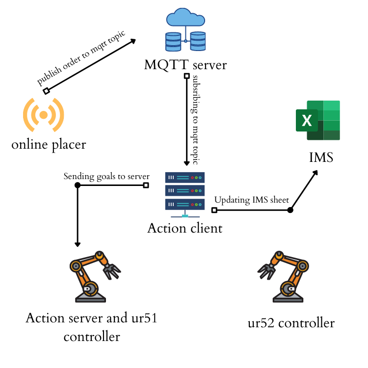

Workflow
With the help of intelligent sensors, advance information technologies and IoT we have achived automation in warehouse management.
MQTT
With the use of MQTT Warehouse is easily managable across the globe. MQTT can scale to connect with millions of IoT devices. Many IoT devices connect over unreliable cellular networks. MQTT’s support for persistent sessions reduces the time to reconnect the client with the broker.
Bi-directional Communications
MQTT allows for messaging between device to cloud and cloud to device. This makes for easy broadcasting messages to groups of things.
Online Placer
This node is responsible for placing order on mqtt topic.
Action Client
The Action Client subscribes to the topic /eyrc/vb/eTrzIron/orders for online orders and as soon as an order is placed on this mqtt topic, the action client updates the incomingOrders sheet of IMS and create a goal which contains order details and than this goal is sent to the Action server for further processing.
Action Server And ur5_1 controller
This node recieves goals from the action client, this node uses the concept of threading to recieve multiple goals, the idea behind this is that the main thread will always be running and ready for recieving the goals, and an another thread which is "order_handler" thread is processing the goals seperately.
Now as when the very first goal is recieved it starts the order_handler thread. also this goal and all upcoming goals are recieving in main thread and these goals are seperated in different lists according to thier priority to process them later in order_handler thread.
2d Camera
This is responsible for mapping packages with their color. for mapping the colors we first take the image of all the pacakges and than crop this image so that only region of interest is present in cropped image than we use this cropped image to get qr_data. for eg, if we want the color of packagen00 we first take the image, now we know that packagen00 lies in a square made with points (100,300)[top left vertex](250,450)[bottom right vertex] so this is the region of interest for packagen00 now we crop this the image to get only region of interest [ROI] and send this cropped image with only packagen00 to function get_qr_data() which gives us the color of package00 now we map this color with box_name and details in a global lists according to their priority and using these lists while processing goal.
Main Thread
It is also updating the inventory sheet of the IMS. with the use of 2d camera main thread detects the pacakges and save them in lists for further processing during dispatching and shipping. it seperates all the goals coming from the server in three critirea based on thier priority which is used by order_handler thread while processing the goals
order_handler thread
This thread is processing the goals but their is only one condition that the higher priority orders should be process first , for that we are first checking that if their is any high priority order to process if we got one than it is processed and if not it than checks for medium priority orders and these orders are saved in lists by main thread.
Now for processing any certain goal at first it's priority is cheked and than we use the data of our inventory which is saved in a dictionary by 2d camera to get the position(row and col) of that particular package and than a saved trajectory to that position is sent to the ur5_1 to pick and place it on the conveyor belt and so the dipatching of the pacakge is done and this data is updated in ordersDispatched sheet of IMS and an email alert is sent to the user alerting that the order is dispatched.
ur5_2 Controller
2d Camera
This is responsible for mapping packages with their color. for mapping the colors we first take the image of all the pacakges and than crop this image so that only region of interest is present in cropped image than we use this cropped image to get qr_data. for eg, if we want the color of packagen00 we first take the image, now we know that packagen00 lies in a square made with points (100,300)[top left vertex](250,450)[bottom right vertex] so this is the region of interest for packagen00 now we crop this the image to get only region of interest [ROI] and send this cropped image with only packagen00 to function get_qr_data() which gives us the color of package00 now we map this color with box_name and details in a global lists according to their priority and using these lists while processing goal.
Package detection
As the ur5_1 places a package on the conveyor belt this pacakge than come towards ur5_2 and as soon as it reaches in the range of logical camera it is detected by the program and stopped at a particular position (home position) and than ur5_2 grip the package, now package name as detected by logical camera is used to retreive it's color form the data saved by the 2d camera and as we get the color of the pacakge a saved trajectory to that color bin is sent to ur5_2 and than ur5_2 pick and drops the pacakge in desired bin and thus the pacakge is shipped and this data is updated in the orderShipped sheet of the IMS and an email is sent to the user alerting that order is shipped.